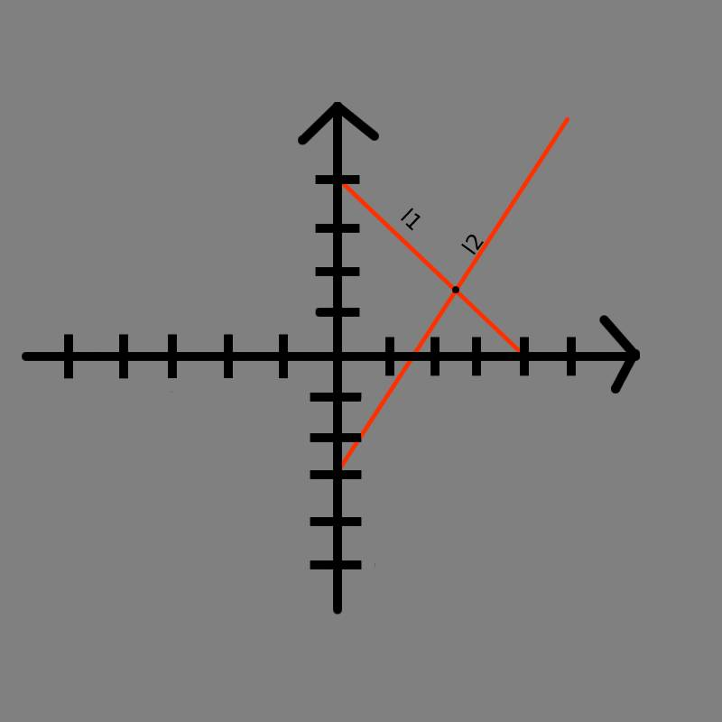
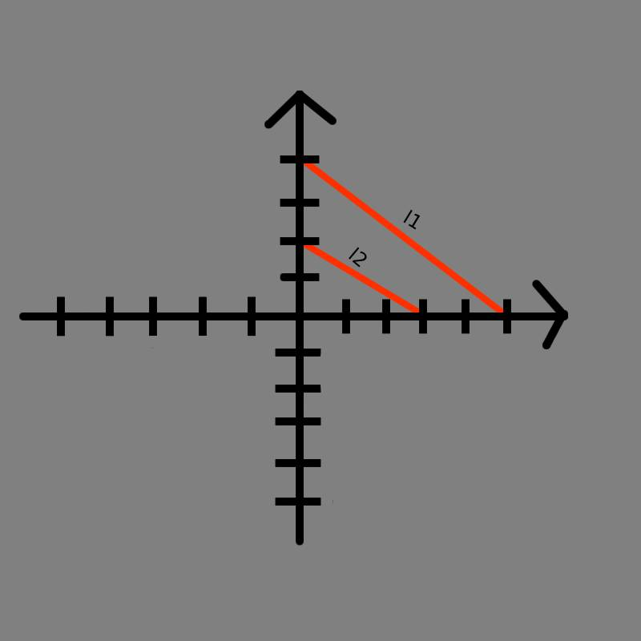
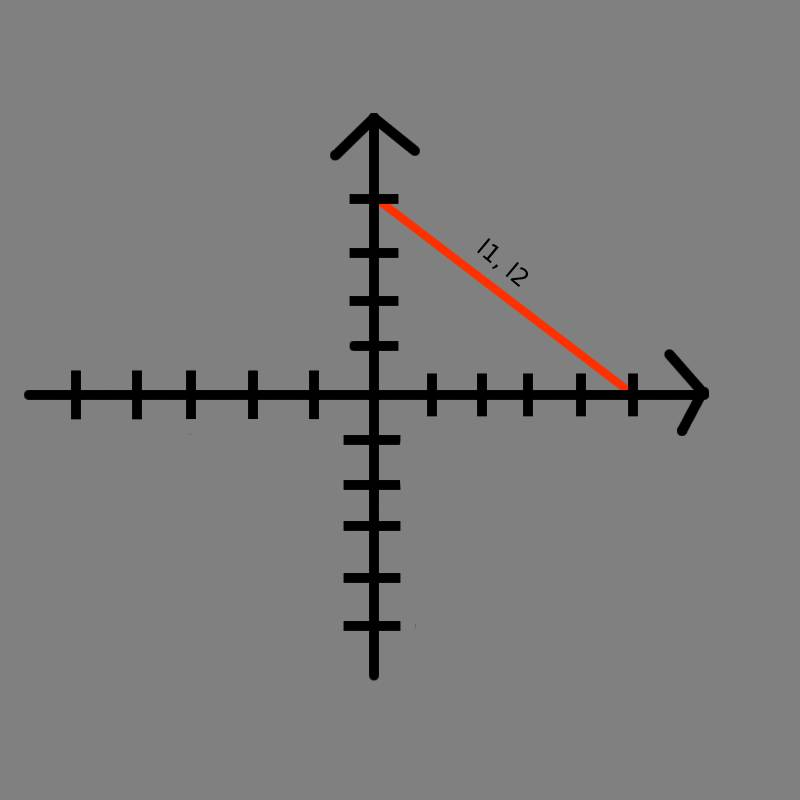

Informacje ogólne
Podstawowe wiadomości
Wzór ogólny funkcji: f(x)=ax+b, gdzie a to współczynnik liniowy, a b określa punkt przecięcia z osią Y o współrzędnych (0;b)
Równanie kierunkowe prostej: y=ax+b
Równanie ogólne prostej: Ax+By+C=0
Prostopadlość dwóch prostych
Jeśli współczynniki dwóch prostych są takie same to proste są równoległe
y=a1+b1 oraz y=a2+b2
y1||y2, gdy a1=a2
Równoległość dwóch prostych
Jeśli współczynnik dwóch prostych po pomnożeniu przez siebie dają wynik -1 to proste są prostopadłe, lub inaczej mówiąc jeden współczynnik jest odwrotny i przeciwny względem drugiego
y=a1+b1 oraz y=a2+b2, gdzie jeden z współczynników kierunkowych jest różny od zera
y1⟂y2, gdy a1×a2= -1
Monotoniczność funkcji
Jeżeli a﹥0 to funkcja jest rosnąca
Jeżeli a﹤0 to funkcja jest malejąca
Jeżeli a=0 to funkcja jest stała
Interpretacje geometryczna układu równań liniowych
Układ oznaczony
Jeżli dwie proste precinają się w jednym punkcie, to układ nazywamy oznaczonym(posiada jedno rozwiązanie)
Układ sprzeczny
Jeżeli dwie proste są równoległe i różne, to układ nazywamy sprzecznym(nie posiada rozwiązań)
Układ nieoznaczony
Jeżeli dwie proste pokrywają się, to układ nazywamy nieoznaczonym(posiada nieskończenie wiele rozwiązań)
Obliczanie miejsca zerowego funckji
Jeśli a ≠ 0 to funckja liniowa ma jedno miejsce zerowe określone wzorem: Mz=-b/a
Przykład: a=2 oraz b=4
Podstawiamy do wzoru Mz= -4/2 -> Mz = -2
Wzór na prostą przechodzącą przez dany punkt, znając współczynnik kierunkowy
Posiadam punkt A=(1;3) oraz współczynnik kierunkowy a=5
Aby obliczyć, prostą skorzystamy w wzoru y=a(x-x1)+y1
W tym przypadku x1=1 oraz y1=3
Podstawiamy do wzoru: y=5(x-1)+3 -> y=5x-5+3 -> y=5x-2
Ostatecznym wzorem jest więc y=5x-2
Przykłady zadań
Zadanie 1
Wyznacz wzór funkcji, równoległej do danej prostej oraz przechodzącej przez dany punkt
y=4x-2 oraz P(0;5)
Jeżeli funkcja ma być równoległa to a1=a2
Więc, aby funckja była równoległa to a nowo powstałej funkcji musi być taka sama
Teraz, znając współczynnik kierunkowy oraz punkt możemy skorzystać ze wzoru y=a(x-x1)+y1, pamiętając, że x1=0 oraz y1=3
y=4(x-0)+5 -> y=4x+5
Więc, prosta równoległa do prostej y=4x-2 oraz przchodząca przez punkt P(0;5) ma wzór y=4x+5